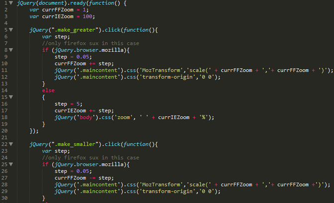

jQuery is a cross-platform JavaScript library designed to simplify the client-side scripting of HTML. jQuery is the most popular JavaScript library in use today, with installation on 65% of the top 10 million highest-trafficked sites on the Web. jQuery is free, open-source software licensed under the MIT License. jQuery's syntax is designed to make it easier to navigate a document, select DOM elements, create animations, handle events, and develop Ajax applications. jQuery also provides capabilities for developers to create plug-ins on top of the JavaScript library. This enables developers to create abstractions for low-level interaction and animation, advanced effects and high-level, theme-able widgets. The modular approach to the jQuery library allows the creation of powerful dynamic web pages and Web applications.
